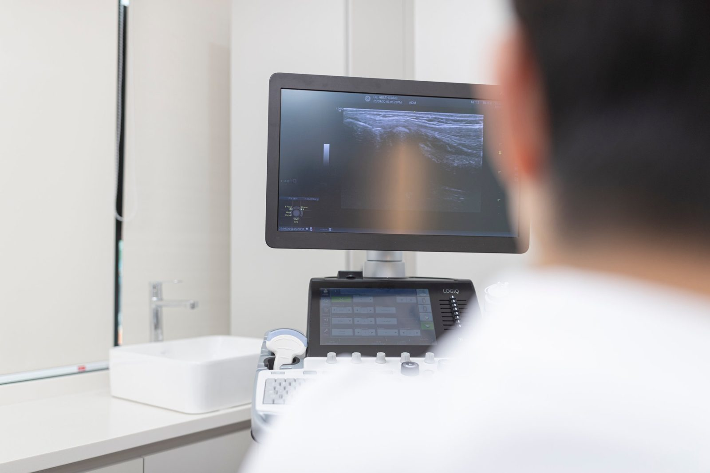
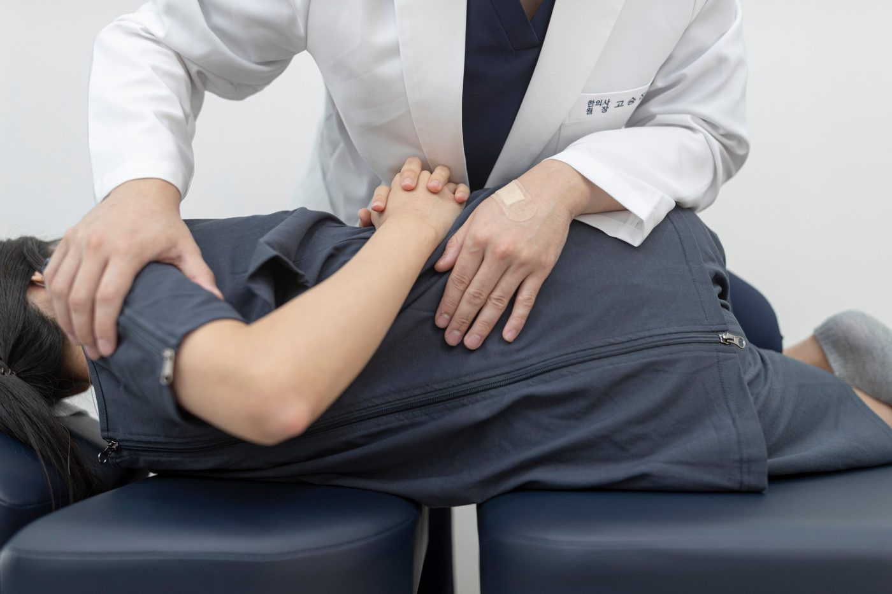
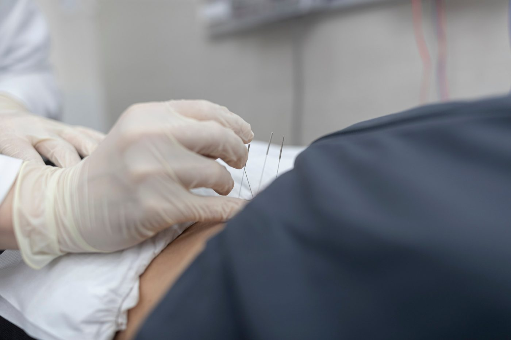
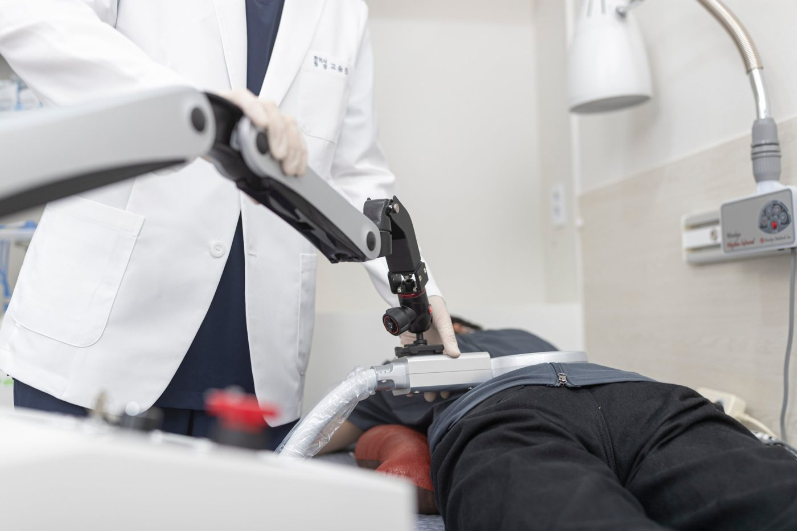
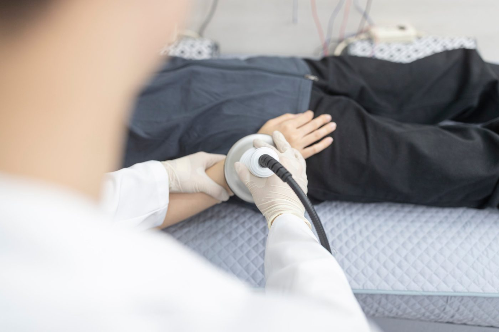

반복되는 통증은 자세와 생활습관에서 시작되는 경우가 많습니다.
통증 부위와 함께 몸의 균형을 살핍니다.
CHECK
이런 분께 권합니다
- 목과 어깨가 자주 결리고 뻐근한 분
- 허리 통증이 반복되는 분
- 무릎·손목 등 관절이 불편한 분
- 거북목·골반 틀어짐이 신경 쓰이는 분
- 오래 앉아 일하거나 서서 일하는 분
- 운동 후 통증이 오래가는 분
TREATMENT
통증 치료 방법
진찰 결과에 따라 필요한 치료를 골라 함께 진행합니다.

01CHUNA
추나요법
한의사가 손으로 틀어진 척추와 관절, 근육의 균형을 바로잡는 치료입니다. 몸의 정렬을 맞춰 통증이 반복되지 않도록 돕습니다.
기준에 따라 건강보험이 적용됩니다.

02ACUPUNCTURE
침 치료
통증 부위와 관련된 경혈에 침을 놓아 굳은 근육을 풀고 통증을 관리합니다.
03ULTRASOUND
초음파 약침
초음파 기기로 근육과 인대 등 통증 부위의 상태를 화면으로 직접 확인하고, 그 부위에 약침을 놓습니다. 눈으로 보며 치료를 진행합니다.

04PHYSICAL THERAPY
한방 물리요법
물리치료 기기를 이용해 온열·전기 자극 등으로 굳은 근육을 이완하고 순환을 돕습니다.

05SHOCKWAVE
충격파 치료
통증 부위에 충격파를 전달하는 치료로, 어깨·팔꿈치·발바닥 등 오래된 힘줄·근육 통증 관리에 쓰입니다.
약침
한약재에서 추출한 약액을 경혈에 주입하는 치료입니다.
생활 관리 안내
통증이 반복되지 않도록 자세와 스트레칭을 안내합니다.
주말·공휴일 진료
365일 진료하므로 치료를 꾸준히 이어 가기 편합니다.
PROCESS
진료 과정
1
접수·문진
불편한 곳과 생활습관을 여쭙니다
2
진찰
몸 상태를 꼼꼼히 살핍니다
3
치료 계획 설명
치료 방법과 기간을 설명드립니다
4
치료
계획에 따라 치료를 진행합니다
5
경과 관리
변화를 확인하며 조정합니다
추나요법은 기준에 따라 건강보험이 적용되며, 그 밖의 치료 비용은 비급여 진료비용 안내를 참고해 주세요. 치료 방법과 횟수는 진찰 후 개인에 맞게 안내드립니다.